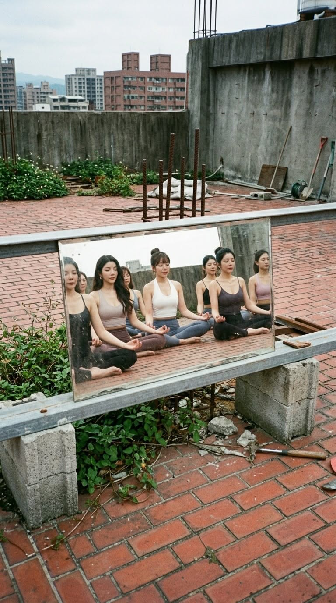

選課前，先想三件事：你希望練習成為生活中的什麼時刻？過去有哪些運動經驗？一週裡哪個時段能比較從容地到教室？
接著確認課程是否適合初學者、節奏與強度，以及是否需要先上基礎課。課名相同，老師的帶領方式也可能不同。
把這些想法告訴 Chloe，就能把選課問題整理得更清楚；實際動作與課堂調整，則由授課老師帶領。
CHLOE HUANG · YOGA JOURNEY FUXING
在忙碌的生活裡，留一點時間給自己。
我是 Chloe 黃鏡，陪你探索適合自己的瑜伽旅程。
A little space.
A deeper connection.
瑜伽的開始，可以是一份好奇、一段留給自己的時間，也可以是想重新認識日常的心情。
我是 Chloe 黃鏡，Yoga Journey 復興館的業務專員，也是你了解課程時的諮詢夥伴。我會先聽聽你的期待與生活安排，陪你釐清選課方向、認識會館，再由授課老師帶領你的練習。
Chloe 陪你找到自己的開始

PAUSE. BREATHE. BEGIN AGAIN.
Room to simply be.
沒有唯一的開始方式。
從你現在的好奇，找到想探索的方向。
從入門課程認識呼吸、動作與課堂節奏。先分享你的運動經驗，再一起整理適合詢問老師的問題。
想在日常裡安排舒展與放鬆？可以先了解課程步調、停留時間與使用的輔具。
想探索較有動態感的練習，可以從課程強度、動作銜接與既有經驗開始討論。
利用懸掛布輔助的練習。先確認初階課程內容、參與條件，以及老師如何帶領新手。
在加溫教室中進行瑜伽。環境與課堂節奏都值得先了解，再決定是否適合自己。
器械皮拉提斯是另一種練習方向。可先了解器械、班級形式，以及與瑜伽不同的課堂安排。
以上為練習方向介紹；實際課程名稱、時段與參與條件，以會館最新安排為準。
一些開始前的小問題。
讓未知，慢慢變得熟悉。
選課前，先想三件事：你希望練習成為生活中的什麼時刻？過去有哪些運動經驗？一週裡哪個時段能比較從容地到教室？
接著確認課程是否適合初學者、節奏與強度，以及是否需要先上基礎課。課名相同，老師的帶領方式也可能不同。
把這些想法告訴 Chloe，就能把選課問題整理得更清楚；實際動作與課堂調整，則由授課老師帶領。
瑜伽課程會依類型結合體位、呼吸與專注；器械皮拉提斯則運用器械與阻力，安排控制、協調等練習。每堂課的內容仍以授課老師的設計為準。
可以比較班級人數、課堂節奏、器械使用與預約方式。與其急著決定哪一種「比較好」，不如先了解哪一種課堂形式讓你更想持續參與。
復興館提供器械皮拉提斯方向，實際時段、名額與課程內容請向館方確認。
不用先做到照片裡的姿勢，才能開始詢問課程。選課時可以說明自己的經驗與擔心，了解入門課如何安排、是否使用輔具。
到了課堂，也不需要追求與別人相同的幅度。讓老師知道你的狀況，依現場指導理解每個動作；適合你的進度，值得被尊重。
有個別身體狀況時，請先確認適合參與的練習範圍，再與授課老師討論。
A QUIET CORNER IN TAIPEI
在城市裡，留一處練習的空間。
Yoga Journey 復興館，位於台北大安區。
自然採光、多元練習方向，讓你把一段屬於自己的時間，放進日常。
YOGA JOURNEY · 復興館
台北市大安區
復興南路一段 222 號 3 樓
忠孝復興生活圈
Fuxing, Taipei.不用急著決定，先聊聊你的想法。
想了解第一堂課、練習方向，或只是對瑜伽有點好奇？
你可以從「我想開始，但還不太確定……」說起。